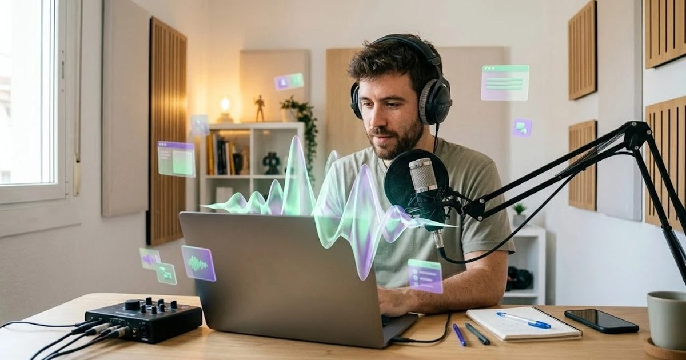

ElevenLabs es la herramienta de referencia para generar voz con IA: locuciones para vídeos, audiolibros, doblaje a otros idiomas o voces para asistentes. Su calidad en español es de las más naturales del mercado, pero su sistema de créditos y las condiciones de uso comercial generan muchas dudas. En esta reseña te explicamos qué ofrece en 2026, cuánto cuesta cada plan y qué conviene saber antes de pagar.
Nuestra opinión en 30 segundos
- Lo mejor: voces muy naturales en español, clonación de voz y doblaje a otros idiomas.
- Lo peor: el plan gratuito no permite uso comercial y los créditos se agotan rápido en proyectos largos.
- Para quién: creadores de vídeo, formación online, podcasts y marketing.
- Valoración: 4,5 / 5.
Precios de ElevenLabs en 2026
| Plan | Precio | Créditos al mes | Uso comercial | Clonación de voz |
|---|---|---|---|---|
| Free | 0 $ | 10.000 | No (con atribución) | No |
| Starter | unos 6 $ | 30.000 | Sí | Instantánea |
| Creator | 22 $ (11 $ el primer mes) | unos 100.000-121.000 | Sí | Profesional |
| Pro | 99 $ | 600.000 | Sí | Profesional |
| Scale / Business | 299 $ / 990 $ | 1,8 M / 6 M | Sí | Profesional, equipos |
Cuánto da de sí: 10.000 créditos equivalen a unos 10 minutos de locución. Un vídeo de YouTube de 8 minutos con guion de unas 1.200 palabras consume alrededor de 7.000-8.000 créditos.
Qué hace bien ElevenLabs
- Naturalidad: entonación, pausas y emoción muy realistas, también en español de España.
- Biblioteca de voces: miles de voces con distintos acentos, edades y estilos.
- Clonación de voz: crea una versión digital de tu propia voz para grabar sin micrófono.
- Doblaje: traduce un vídeo a otros idiomas manteniendo la voz original.
- Efectos de sonido y transcripción dentro de la misma plataforma.
Dónde se queda corto
- Plan gratuito sin uso comercial: no puedes monetizar ni usar en tu negocio lo que generes gratis.
- Consumo de créditos: en proyectos largos (audiolibros, cursos) se agotan rápido y hay que subir de plan.
- Pronunciación de nombres propios y siglas: a veces hay que escribirlos como se pronuncian.
- Consideraciones éticas: la clonación exige consentimiento, y conviene indicar al público cuándo una voz es sintética.
¿Qué plan te conviene?
| Tu caso | Plan recomendado |
|---|---|
| Probar voces, uso personal | Free |
| Algunos vídeos al mes para tu negocio | Starter |
| Canal de YouTube o cursos con locución semanal, o clonar tu voz | Creator |
| Audiolibros, doblaje o producción continua | Pro o superior |
Un caso práctico
Una formadora que crea cursos online de Excel clona su propia voz en el plan Creator. Graba en persona los vídeos de bienvenida y usa su voz clonada para las lecciones técnicas, que actualiza a menudo: cuando cambia un paso, edita el guion y regenera el audio en minutos, sin volver a montar el micrófono. Ejemplo ilustrativo.
Veredicto
ElevenLabs es la mejor opción para generar voz en español con calidad profesional. Prueba gratis para elegir voz, pero ten en cuenta que para cualquier uso comercial necesitas al menos Starter, y Creator si vas a clonar tu voz o producir cada semana. Otras opciones de voz con IA en las mejores IA para generar voz.
Preguntas frecuentes
¿ElevenLabs es gratis?
Tiene un plan gratuito con 10.000 créditos al mes (aproximadamente 10 minutos de voz), pero no permite uso comercial y exige atribuir a ElevenLabs en el contenido público. Para usar las voces en tu negocio necesitas al menos el plan Starter.
¿Cuánto cuesta ElevenLabs?
En 2026 los planes principales son Starter por unos 6 $ al mes, Creator por 22 $ (11 $ el primer mes), Pro por 99 $, Scale por 299 $ y Business por 990 $ al mes, cada uno con más créditos incluidos.
¿ElevenLabs habla bien español?
Sí. Tiene voces en español de España y de Latinoamérica con entonación muy natural. Conviene elegir una voz con el acento de tu público y escuchar varias antes de decidir.
¿Es legal clonar una voz con ElevenLabs?
Solo puedes clonar tu propia voz o la de alguien que te dé su consentimiento expreso. Clonar la voz de otra persona sin permiso incumple las condiciones de ElevenLabs y puede vulnerar sus derechos.
¿Qué es un crédito en ElevenLabs?
Es la unidad de consumo: en texto a voz, un crédito equivale aproximadamente a un carácter. Otras funciones, como el doblaje o la transcripción, consumen créditos a su propio ritmo.
Escrito y revisado por el equipo editorial de HerramientasIA. No tenemos acuerdos comerciales con las herramientas mencionadas. ¿Ves un dato desactualizado? Avísanos.